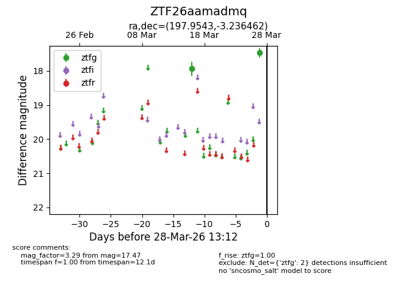
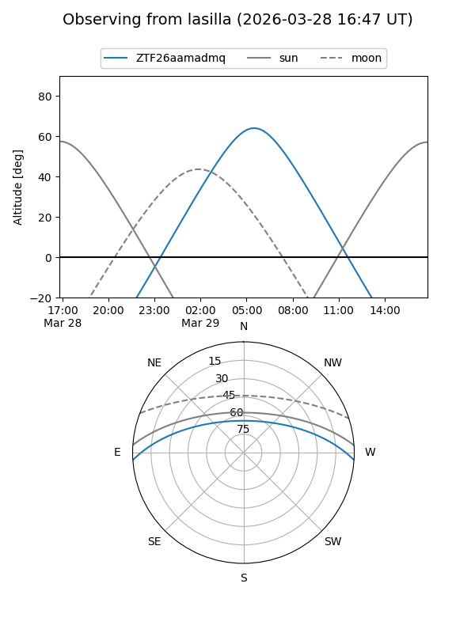
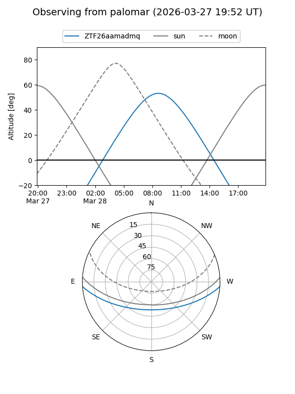

ZTF26aamadmq
Target ZTF26aamadmq at 2026-03-28 13:15
Aliases and brokers:
FINK: link
Lasair: link
ALeRCE: link
alt names
ZTF26aamadmq (ztf,fink_ztf)
Coordinates:
equatorial (ra, dec) = 197.9543,-3.23646
equatorial (HMS+DMS) = 13:11:49.02,-03:14:11.26
galactic (l, b) = (312.9149,+59.23971)
Flags:
Photometry:
last ztfg=17.47
2 ztfg detections
Lightcurve

Visibility


Additional plots